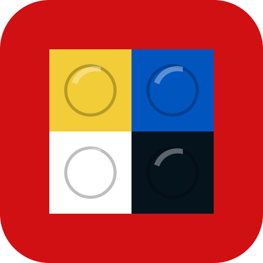

Wähle links ein Foto. Das Mosaik verwendet nur echte LEGO-Teile und offizielle LEGO-Farben.
Tippe in die Vorschau oder wähle einen Bereich, um ihn auszublenden, anzuheben oder umzufärben.
Erstelle zuerst im Entwurf ein Mosaik.